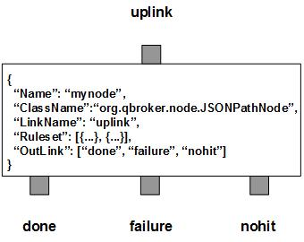

JSONPathNode parses JSON payload of JMS messages and retrieves data from the payload according to the predifined JSONPath expressions. It then sets them into message's properties. The original JSON payload should be always stored in the message body. JSONPathNode will not modify the JSON payload. There are three outlinks, done for all parsed messages, nohit for those messages not belonging to any predefined rulesets, failure for those messages failed in the JSONPath evaluations. JSONPath is the path with dot as the delimiter, similar with those for dust.js.
JSONPathNode contains a number of predefined rulesets. These rulesets categorize messages into non-overlapping groups. Therefore, each rule defines a unique message group. The ruleset also defines the JSONPath expressions. The original JSON payload should be always stored in the message body. Due to JMS specifications, you have to clear user properties before resetting them on a readonly message. You can specify ResetOption in a ruleset so that the message header will be reset for modifications. Its value is 0 for no reset, 1 for optional reset and 2 for guaranteed reset.
JSONPathNode supports dynamic setting of jsonpath expressions. It means you can reference properties of the message in your jsonpath expressions. JSONPathNode will retrieve the data from the incoming message and compile the expressions before the evaluation.
JSONPathNode always adds an extra ruleset for the nohit messages. This nohit ruleset is always the first ruleset with the id of 0. On the node level, DisplayMask and StringProperty control the display result of outgoing messages.
You are free to choose any names for the three fixed outlinks. But JSONPathNode always assumes the first outlink for done, the second for failure and the last for nohit.
The JSONPath evaluation is executed via the pre-defined rulesets. Therefore, the configuration of the rulesets is critical to the operations of JSONPathNode. Here are complete properties of rulesets for JSONPathNode.
| Property Name | Data Type | Requirement | Description | Examples |
|---|---|---|---|---|
| Name | alphanumeric with no spaces | mandatory | name of the ruleset | event |
| ResetOption | integer | optional | option to reset properties | 2 (default: 0) |
| JSONPath | map | mandatory for JSONPath only | for resetting properties of messages | see example |
| PreferredOutLink | alphanumeric with no spaces | mandatory for bypass only | name of the preferred outlink | bypass |
| JMSPropertyGroup | list | optional | list of pattern groups on properties to select messages | see example |
| XJMSPropertyGroup | list | optional | list of pattern groups on properties to exclude messages | see example |
| PatternGroup | list | optional | list of pattern groups on body to select messages | see example |
| XPatternGroup | list | optional | list of pattern groups on body to exclude messages | see example |
| StringProperty | map | optional | for setting the user properties on the messages | see example |
{
...
"Ruleset": [{
"Name": "bypass",
"PreferredOutLink": "BYPASS",
"JMSPropertyGroup": [{
"JMSType": "^score$"
}]
}],
...
}
where it routes the messages to the outlink of BYPASS.
Here is an example of the JSONPath ruleset.
{
...
"Ruleset": [{
"Name": "script",
"JMSPropertyGroup": [{
"operation": "^start$"
}],
"ResetOption": "1",
"JSONPath": {
"ActionScript": "StartScript"
}
}],
...
}
where it extracts the content from the JSON payload and sets the value on the
property of ActionScript.
Here is an example of JSONPathNode:
{
"Name": "node_jsonpath",
"ClassName": "org.qbroker.node.JSONPathNode",
"Description": "parse json messages",
"Operation": "evaluate",
"LinkName": "root",
"Capacity": "6",
"DisplayMask": "0",
"Debug": "19",
"Ruleset": [{
"Name": "test",
"ResetOption": "1",
"JMSPropertyGroup": [{
"JMSType": "."
}],
"JSONPath": {
"FileName": "store.book[0].path"
}
}],
"OutLink": ["parsed", {
"Name": "failure",
"Capacity": "24",
"Partition": "0,6"
},{
"Name": "nohit",
"Capacity": "24",
"Partition": "0,6"
}]
}